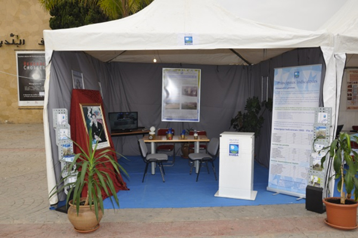
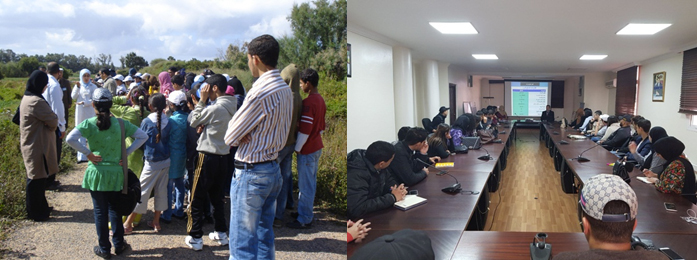

Espace Communication
Communication Événementielle
La communication par l’événement a pour objectif d’instaurer une relation privilégiée avec les publics cibles de la RAMSA. L’exposition, le salon et la foire, les colloques, les journées d’information et de communication, les séminaires…sont des formes très adaptées pour la Régie en termes de communication événementielle, et en même temps permettent à cette institution publique de promouvoir des actions de communication, de diffuser de l’information auprès d’un public ciblé, voire de développer son image. En effet, la communication événementielle a poursuivi sa stratégie de proximité à travers un certain nombre d’actions et d’événements interactifs.
Organisation d’une journée de communication et de sensibilisation sur la réutilisation
En date du 27 Juillet 2017, la RAMSA en partenariat avec la wilaya de la région Souss Massa ont organisé une journée de communication sur la réutilisation des eaux usées épurées. Ont pris part à cette journée l’Agence du Bassin Hydraulique, la faculté des sciences, les golfs de la place, ORMVA, direction de l’environnement et la société civile. L’objectif de cette journée est la sensibilisation et l’incitation des acteurs des espaces verts à la réutilisation des eaux épurées afin de pallier au problème de pénurie d’eau.
La Sensibilisation à l’économie de l’eau
La gestion des ressources en eau devient un défi majeur pour la Régie. De ce fait, la sensibilisation à l’économie d’eau fait sans aucun doute le cheval de batail de la RAMSA et la pièce maitresse du service communication. Des ateliers pédagogiques conçus pour les étudiants, les lycéens et les écoliers, une projection de film, des expositions et des conférences académiques étaient au programme de l’année 2017.
Communiquer via les associations c’est donc les tenir informées des actions de sensibilisation à l’économie d’eau et leur donner les moyens de relayer cette information en leur faisant parvenir, par exemple, les visuels des campagnes, les dépliants informatifs, les brochures…afin de mobiliser la population pour plus de conscience vis-à-vis l’utilisation de l’eau. A cet effet, la RAMSA a organisé plusieurs rencontres débats avec les écoliers et le corps associatif afin de les tenir informer sur les principales réalisations et de répondre en même temps sur les questions qui les intriguent.
Journée Nationale des MRE
Les membres de la communauté marocaine résidant à l’étranger (MRE) sont venus en force pour participer à la Journée nationale du migrant organisée le mercredi 10 Août à la Chambre de Commerce, de Services et d’Industrie (CCIS) Souss-Massa à Agadir.
«Nos jeunes à l’étranger: énergies, défis et paris d’avenir» est le thème retenu lors de cette rencontre qui a été l’occasion pour certains de recevoir les hommages qui leur sont rendus suite à leur implication dans le développement et le rayonnement de leur pays d’origine à l’international. Pour d’autres, pour exposer leurs problèmes et exprimer leurs doléances.
A cette occasion, un stand a été dédié à la RAMSA pour communiquer davantage sur ses efforts en matière de développement durable, de préservation de l’environnement et de sensibilisation à l’économie d’eau et aussi pour découvrir aux nombreux visiteurs, par le biais de panneaux d’information, film institutionnel et dépliants, ses investissements engagés sur le Grand Agadir notamment en matière de dépollution du littoral par la réalisation des STEP, de Mzar, d’Aourir, d’Anza, et le développement du projet de réutilisation des eaux épurées. L’occasion a été aussi pour présenter les nouveaux services et prestations présentés au profit des clients de la Régie tels que : les points d’encaissement et le règlement en ligne.
Soutien et Parrainage des Evénements
Comme à l’accoutumé, l’année 2017, a été marquée par le soutien des activités socio-culturelles, sportifs et environnementales par la RAMSA que ce soit pour le compte de l’université Ibn Zohr, ou pour les associations du grand Agadir. Cette action contribue à améliorer l’image de la RAMSA et Bénéficier de la couverture médiatique de l’action.
Cérémonie en l’honneur des femmes le 8 Mars
Pour mettre l’accent sur l’importance et la valeur accordée aux femmes qui contribuent au quotidien au développement de la Régie à tous les niveaux et à l’occasion de la journée mondial de la femme la Direction Générale de la RAMSA en étroite collaboration avec les Œuvres Sociales de la Régie a organisé une réception en l’honneur des femmes de la Régie.
Visites guidées
La RAMSA a organisé plusieurs visites aux stations de traitement des eaux usées de M’zar, Anza et Bensergao ainsi qu’aux différents ouvrages de la Régie tel que le BCC, SIG. Ont bénéficié de ces visites les écoles, instituts et associations de la place. L’objectif est de valoriser davantage l’image de la RAMSA et de faire comprendre son fonctionnement et son rôle dans la protection de l'environnement.
Présence de la RAMSA dans la presse locale
Le rôle des médias pour la RAMSA est incontestable. Ils ont un rôle informatif indispensable pour les citoyens. Ils jouent un rôle de relais d’information entre la régie et ses clients. Nous côtoyons les médias tous les jours, leur évolution et leur rôle bougent très rapidement depuis quelques années. La relation presse portait essentiellement sur la situation de l’eau dans le grand Agadir, les inondations, la coupure d’eau, les campagnes de sensibilisation à l’économie de l’eau.
L’objectif est de multiplier les contacts avec la presse locale et nationale pour asseoir les bases d’une relation solide et transparente et de développer une relation de proximité avec ses partenaires. La régie cherche à instaurer un climat fraternel d’estime et d’adhésion via la transmission de l’information aux différents publics.
© RAMSA
Realisation 2019